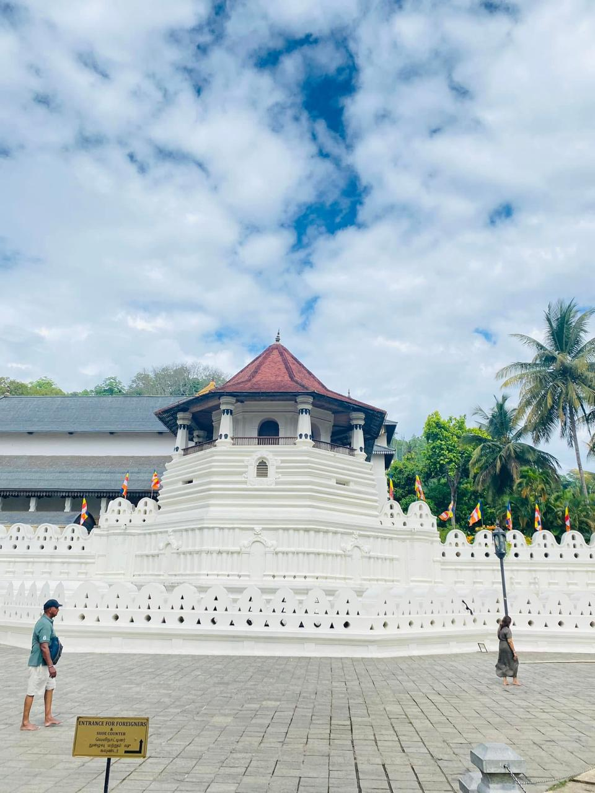
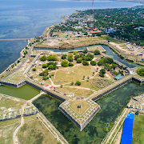

Visit Sri Lanka
Discover the beauty of Sri Lanka's 9 provinces. Plan your next adventure and explore scenic landscapes, vibrant cities, and rich culture.


Central Province
Rich in culture and tea plantations.
Western Province
The bustling heart of Sri Lanka.

Southern Province
Relax on stunning beaches.
Northern Province
Explore Jaffna and the northern culture.

Eastern Province
Known for its pristine beaches.

North Western Province
A province of great history.

North Central Province
Visit ancient ruins and cities.

Uva Province
Experience scenic hills.

Sabaragamuwa Province
Known for waterfalls and gems.